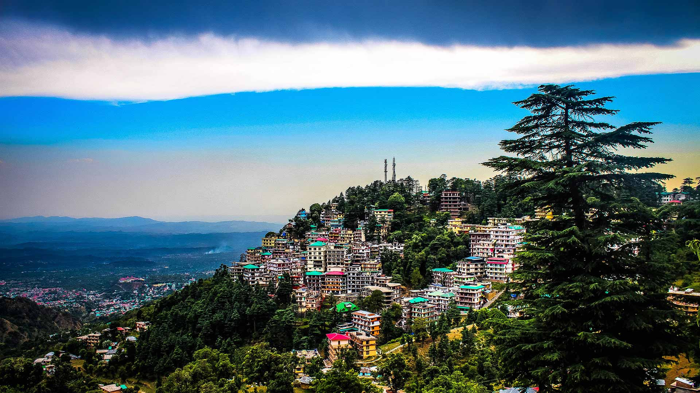
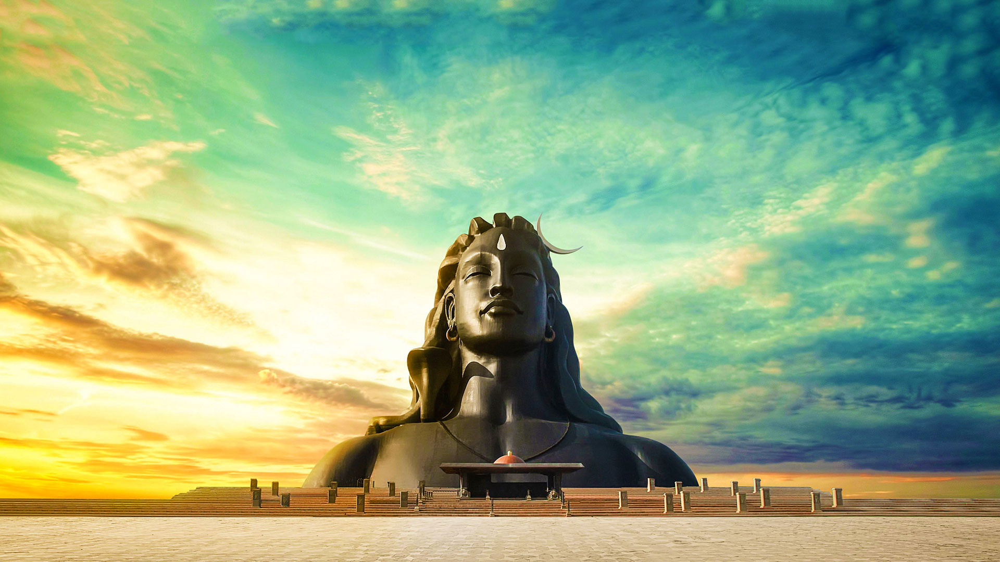
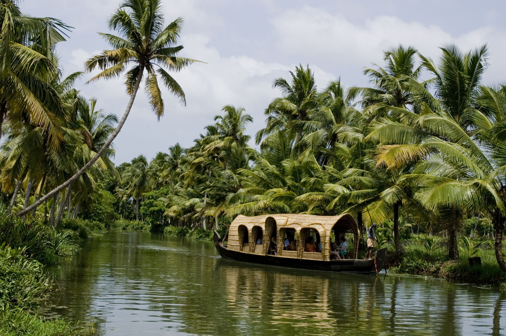
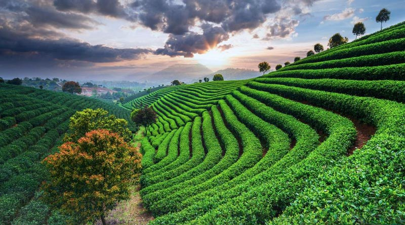
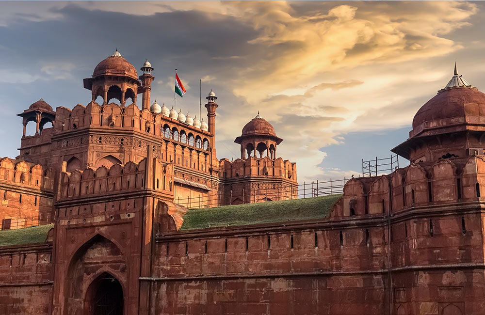

-

Taj Mahal, Agra
A part of India's popular Golden Triangle tourist circuit, Agra is best known for the Taj Mahal. Enough said really. It's India's most iconic monument and one of the top historical attractions.
-

Gateway of India, Mumbai
The Gateway of India is an arch monument built during the 20th century in Bombay, India.
-

Mysore Palace, Karnataka
Mysore Palace, also known as Amba Vilas Palace, is a historical palace and a royal residence (house). It is located in Mysore, Karnataka.
-

McLeod Ganj, HP
McLeod Ganj, also spelt McLeodganj, (pronounced Mc-loud-gunj) is a suburb of Dharamshala in the Kangra district of Himachal Pradesh, India.
-

Isha Foundation, Coimbatore
Isha Foundation is a nonprofit, spiritual organisation that was founded in 1992 near Coimbatore, Tamil Nadu, India, by Sadhguru.
-

Kerala Backwaters, Kerala
The lush green landscape, and houses and villages that line the backwaters make a journey along these waterways seem like a journey through another world.
-

Golden Temple, Amritsar
The Golden temple is famous for its full golden dome, it is one of the most sacred pilgrim spots for Sikhs.
-

Coorg, Madikeri
The coffee plantations of Coorg are famous globally and attract many tourists. The remote and less popular waterfalls also make for beautiful photographs and lush natural beauty.
-

Lonavala and Khandala, Maharashtra
Perched at a height of 622 metres above sea level, Lonavala and Khandala are twin hill stations in the state of Maharashtra.
-

Red Fort, Delhi
New Delhi, the national capital of India, is one of the most cliched yet popular tourist destinations in the country. The state has so much to offer that visiting it once or twice is not enough.